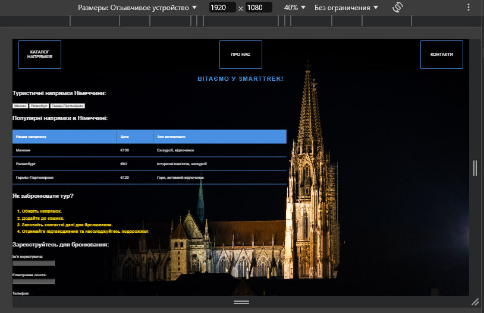

Скріншот стилю десктопної версії
Код стилю десктопної версії
/* Десктопная версия (экран 1024px и больше) */
@media (min-width: 1024px) {
/* Применяем стили только для десктопных экранов */
.welcome-text {
font-size: 36px; /* Увеличиваем размер текста на десктопе */
text-align: center; /* Центрируем текст */
margin-top: 50px; /* Добавляем отступ сверху */
}
.header {
height: 150px; /* Увеличиваем высоту header для десктопа */
padding: 0 30px; /* Добавляем отступы слева и справа */
}
.header .button {
padding: 15px 30px; /* Увеличиваем кнопки */
font-size: 20px; /* Увеличиваем шрифт кнопок */
width: 220px; /* Увеличиваем ширину кнопок */
}
.destination-table th, .destination-table td {
padding: 20px; /* Увеличиваем отступы ячеек в таблице */
}
.destination-list {
font-size: 20px; /* Увеличиваем шрифт списка */
}
/* Дополнительные стили для других элементов, если нужно */
}